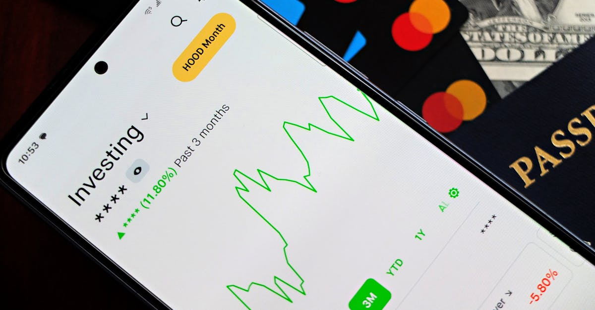

La Banque d'Angleterre tire la sonnette d'alarme sur l'inflation
La Banque d'Angleterre (BOE), par la voix de son gouverneur Andrew Bailey, a dernièrement dressé un tableau préoccupant de l'économie britannique. Lors d'une conférence de presse très attendue, suite à la décision de maintenir les taux d'intérêt inchangés, Bailey a révélé que l'inflation outre-Manche devrait dépasser la barre des 3.5% d'ici la fin de l'année. Cette révision à la hausse, bien que modérée en apparence, résonne comme un signal fort dans un contexte économique déjà tendu. La principale explication avancée pour cette remontée est directe et inquiétante : le conflit persistant au Moyen-Orient. Les répercussions de cette instabilité géopolitique sur les chaînes d'approvisionnement mondiales, notamment dans le secteur de l'énergie, se font sentir de manière tangible sur les prix à la consommation. Cette situation complexe oblige les investisseurs et les épargnants à redoubler de vigilance. Les décisions des banques centrales, autrefois perçues comme des garde-fous fiables, semblent désormais naviguer à vue, confrontées à des chocs exogènes d'une ampleur difficilement prévisible. L'incertitude devient la nouvelle norme, rendant la planification financière à long terme un exercice périlleux. Comment, dans ce climat, assurer la pérennité et la croissance de son patrimoine ? La question mérite une attention particulière, car les stratégies d'épargne et d'investissement doivent s'adapter en temps réel aux nouvelles réalités économiques.
👉 À lire : Crédit entreprise en Europe : les banques durcissent le ton en 2026

Les racines géopolitiques de la flambée inflationniste
L'explication fournie par Andrew Bailey est claire : le conflit au Moyen-Orient est le catalyseur principal de cette nouvelle poussée inflationniste. Il ne s'agit pas d'une simple conjoncture, mais d'une conséquence directe des tensions géopolitiques qui perturbent les flux commerciaux internationaux. Le Moyen-Orient étant un carrefour énergétique majeur, toute instabilité dans cette région a des effets d'entraînement immédiats sur le prix du pétrole et du gaz. Ces hausses se répercutent ensuite sur l'ensemble de l'économie, des coûts de transport aux prix des biens manufacturés, en passant par les intrants agricoles. Les entreprises voient leurs marges se réduire ou sont contraintes de répercuter ces coûts supplémentaires sur les consommateurs, alimentant ainsi une spirale inflationniste. De plus, la peur d'une escalade ou d'une prolongation du conflit peut entraîner une volatilité accrue sur les marchés financiers, poussant les investisseurs à chercher refuge dans des actifs jugés plus sûrs, mais potentiellement moins rémunérateurs. Pour les épargnants, cela signifie une érosion du pouvoir d'achat si leur argent reste dormant sur des comptes bancaires offrant des rendements inférieurs à l'inflation. L'enjeu est donc de taille : il ne s'agit plus seulement de faire fructifier son capital, mais de le protéger activement contre une dévaluation insidieuse. La compréhension de ces mécanismes complexes est le premier pas vers une gestion financière plus résiliente et proactive, où l'anticipation des risques devient une priorité absolue.
👉 À lire : Crise du Détroit d'Hormuz : L'IA, Bouclier et Boussole pour votre Épargne
La BOE maintient le cap : une stratégie attentiste face à l'incertitude
La décision de la Banque d'Angleterre de maintenir ses taux d'intérêt directeurs à leur niveau actuel peut surprendre dans un contexte de remontée de l'inflation. Cependant, cette pause stratégique s'explique par la prudence des décideurs face à une conjoncture économique encore fragile et marquée par des incertitudes majeures. Les membres du comité de politique monétaire (MPC) semblent divisés, certains envisageant même des hausses futures si la situation l'exigeait. Cette divergence d'opinions souligne la difficulté d'établir une trajectoire claire pour la politique monétaire. D'un côté, une inflation persistante appelle à un resserrement des conditions de crédit pour freiner la demande. De l'autre, une économie potentiellement en phase de ralentissement ou au bord de la récession pourrait être pénalisée par une hausse des taux qui renchérirait le coût du financement pour les entreprises et les ménages. La BOE semble opter pour une stratégie d'observation, attendant de voir comment les pressions inflationnistes évoluent et quels sont les effets des tensions géopolitiques sur l'économie réelle. Cette posture attentiste, bien que compréhensible, laisse les marchés dans une certaine expectative. Pour les investisseurs, cela implique de se préparer à des mouvements potentiellement brusques si la banque centrale devait changer de cap de manière significative. La volatilité accrue sur les marchés obligataires et actions est une conséquence directe de cette indécision politique. Il devient crucial de diversifier ses actifs et de ne pas mettre tous ses œufs dans le même panier, en explorant des stratégies qui peuvent tirer parti des fluctuations ou, à tout le moins, en minimiser l'impact négatif.
Implications pour les marchés financiers et les taux d'intérêt
La perspective d'une inflation dépassant les 3.5% et la posture attentiste de la Banque d'Angleterre ont des implications directes et significatives pour les marchés financiers. Premièrement, les rendements des obligations d'État, qui sont sensibles aux anticipations d'inflation et de taux d'intérêt, pourraient connaître une nouvelle pression à la hausse. Si les investisseurs anticipent des taux plus élevés dans le futur pour lutter contre l'inflation, ils demanderont une rémunération plus importante pour détenir de la dette à long terme. Cela peut entraîner une baisse des prix des obligations existantes. Deuxièmement, le marché des actions pourrait réagir de manière contrastée. D'une part, une inflation plus élevée peut éroder les marges bénéficiaires des entreprises si elles ne parviennent pas à répercuter intégralement les coûts accrus. D'autre part, certaines entreprises, notamment celles opérant dans les secteurs de l'énergie ou des matières premières, pourraient bénéficier de la hausse des prix. La perspective de taux d'intérêt qui pourraient éventuellement remonter pèse également sur la valorisation des actions, car elle rend les alternatives d'investissement (comme les obligations) plus attractives et augmente le coût du capital pour les entreprises. Les marchés des changes ne sont pas épargnés, la livre sterling pouvant être affectée par les décisions de politique monétaire et les perspectives économiques divergentes par rapport aux autres grandes économies. Dans ce contexte, la capacité à anticiper les mouvements de marché et à ajuster son portefeuille en conséquence devient primordiale. Les outils d'analyse prédictive et les stratégies d'investissement dynamiques peuvent offrir un avantage certain.
Comment protéger son épargne face à la hausse des prix ?
Face à une inflation qui s'annonce plus tenace que prévu, la protection du pouvoir d'achat de son épargne devient une priorité absolue. Laisser son argent dormir sur un compte courant ou un livret d'épargne dont le taux est inférieur à l'inflation, c'est accepter une perte de valeur réelle progressive. Il est donc impératif de rechercher des stratégies d'investissement capables de générer des rendements supérieurs au taux d'inflation. Plusieurs options s'offrent aux épargnants, chacune avec ses propres caractéristiques de risque et de rendement. Les actifs réels, tels que l'immobilier ou les matières premières (or, métaux précieux), sont souvent considérés comme des valeurs refuges en période d'inflation, car leur valeur tend à augmenter avec le niveau général des prix. Les actions d'entreprises solides, capables de répercuter les hausses de coûts sur leurs clients, peuvent également offrir une protection. Les obligations indexées sur l'inflation sont spécifiquement conçues pour maintenir leur valeur réelle. Cependant, il est crucial de ne pas se précipiter et de bien comprendre les mécanismes de chaque classe d'actifs. La diversification est la clé : répartir son épargne sur différentes classes d'actifs permet de lisser les risques et de ne pas dépendre de la performance d'un seul secteur. La question n'est plus seulement de savoir où placer son argent, mais comment le faire de manière intelligente et personnalisée pour faire face aux défis économiques actuels.

L'investissement automatisé : une réponse à la complexité des marchés
Dans un environnement économique marqué par l'incertitude, la volatilité et la complexité, les stratégies d'investissement traditionnelles peuvent montrer leurs limites. C'est là qu'intervient la puissance de l'intelligence artificielle appliquée à l'épargne et à l'investissement. Les agents IA dédiés à l'optimisation financière offrent une approche novatrice pour naviguer dans ces eaux troubles. Contrairement à un investisseur humain, souvent sujet aux émotions (peur, avidité) qui peuvent conduire à des décisions irrationnelles, une IA peut analyser en temps réel une quantité massive de données économiques, financières et géopolitiques. Elle identifie les tendances, évalue les risques et ajuste automatiquement les portefeuilles pour maximiser les rendements tout en minimisant la volatilité, et ce, 24h/24 et 7j/7. Ces systèmes peuvent exécuter des stratégies de diversification sophistiquées, rééquilibrer les actifs selon des algorithmes précis et même anticiper certains mouvements de marché basés sur des modèles prédictifs avancés. Pour l'épargnant moyen, cela se traduit par une gestion professionnelle et personnalisée de ses placements, sans nécessiter une expertise financière approfondie ni un temps de suivi considérable. L'optimisation devient continue, s'adaptant dynamiquement aux fluctuations du marché et aux nouvelles données économiques, comme celles concernant l'inflation britannique. C'est une manière de reprendre le contrôle de ses finances dans un monde imprévisible, en s'appuyant sur la technologie pour une prise de décision rationnelle et basée sur les données.
Comment l'IA peut anticiper les chocs inflationnistes ?
L'intelligence artificielle, par sa capacité d'analyse et d'apprentissage continu, offre des perspectives fascinantes pour anticiper et réagir aux chocs inflationnistes. Alors que les modèles économiques traditionnels peuvent peiner à intégrer la complexité des interactions géopolitiques et leurs conséquences sur les prix, les algorithmes d'IA peuvent traiter simultanément une multitude de variables. Ils peuvent analyser les flux d'information mondiaux, les données satellitaires sur le trafic maritime, les rapports sur les capacités de production énergétique, et même les discussions sur les réseaux sociaux pour détecter des signaux faibles de perturbations potentielles. Par exemple, une IA pourrait identifier une augmentation anormale des prix du fret maritime vers une région spécifique, combinée à une tension diplomatique accrue, et en déduire un risque accru de hausse des coûts d'importation pour certains biens. En se basant sur ces analyses prédictives, un agent IA peut alors proposer des ajustements proactifs au portefeuille d'investissement. Cela pourrait signifier :
- Réduire l'exposition aux entreprises fortement dépendantes des chaînes d'approvisionnement perturbées.
- Augmenter l'allocation aux secteurs bénéficiant de la hausse des prix des matières premières énergétiques ou agricoles.
- Investir dans des entreprises développant des solutions alternatives ou des technologies d'efficacité énergétique.
- Renforcer la position sur des actifs jugés plus résilients face à l'inflation, comme l'or ou certains biens immobiliers.
Cette capacité d'anticipation et d'adaptation dynamique est cruciale. Elle permet de transformer une menace potentielle, comme la hausse de l'inflation annoncée par la BOE, en une opportunité d'optimisation du portefeuille, protégeant ainsi le capital de l'épargnant et potentiellement générant des gains là où d'autres subiraient des pertes.
L'importance de la personnalisation dans la stratégie d'investissement IA
Si l'intelligence artificielle offre des outils puissants pour naviguer dans la complexité des marchés financiers, il est essentiel de souligner que l'efficacité de ces outils réside dans leur capacité à être personnalisés. Un agent IA ne doit pas être une solution unique pour tous. Au contraire, son véritable potentiel se révèle lorsqu'il est configuré pour répondre aux objectifs spécifiques, à la tolérance au risque et à l'horizon temporel de chaque investisseur. Par exemple, un jeune épargnant avec un horizon de placement de 30 ans et une forte tolérance au risque pourra bénéficier d'une stratégie d'accumulation agressive, axée sur la croissance du capital, même si cela implique une volatilité plus élevée à court terme. À l'inverse, une personne approchant de la retraite cherchera une stratégie plus conservatrice, privilégiant la préservation du capital et la génération de revenus réguliers, tout en cherchant à battre l'inflation. L'IA permet de modéliser ces différents profils et d'ajuster en permanence les allocations d'actifs en fonction des fluctuations du marché et de l'évolution de la situation personnelle de l'utilisateur. Cette approche sur mesure, combinant la puissance analytique de l'IA avec une compréhension fine des besoins individuels, est la clé d'une épargne vraiment intelligente. Elle permet de construire un plan d'investissement robuste, capable de s'adapter aux conditions économiques changeantes, comme une inflation supérieure à 3.5% anticipée par la BOE, tout en restant aligné avec les aspirations financières de chacun.
Conclusion : Naviguer vers la sérénité financière grâce à l'IA
La récente communication de la Banque d'Angleterre, signalant une inflation potentiellement supérieure à 3.5% d'ici la fin de l'année, principalement en raison des tensions géopolitiques au Moyen-Orient, rappelle avec force la fragilité de l'environnement économique actuel. Cette situation, marquée par l'incertitude et la volatilité, pose des défis considérables pour les épargnants et les investisseurs qui cherchent à protéger et à faire croître leur patrimoine. Les décisions des banques centrales, bien qu'elles visent à stabiliser l'économie, créent elles-mêmes des périodes d'attentisme et de fluctuation sur les marchés. Dans ce contexte, il devient plus crucial que jamais d'adopter une approche d'investissement réfléchie et proactive. L'intelligence artificielle, à travers des agents IA spécialisés dans l'optimisation de l'épargne et des placements, offre une solution puissante et adaptée. En analysant en continu une quantité phénoménale de données, en identifiant les risques et les opportunités, et en ajustant les stratégies d'investissement de manière autonome et personnalisée, l'IA permet de construire un bouclier financier résilient. Elle transforme la complexité des marchés en un terrain de jeu où la rationalité et la data priment sur l'émotion. Pour l'épargnant moderne, s'équiper d'un tel outil, c'est choisir la voie de l'épargne intelligente et de l'investissement automatisé, une stratégie gagnante pour naviguer sereinement vers ses objectifs financiers, même dans la tempête économique.